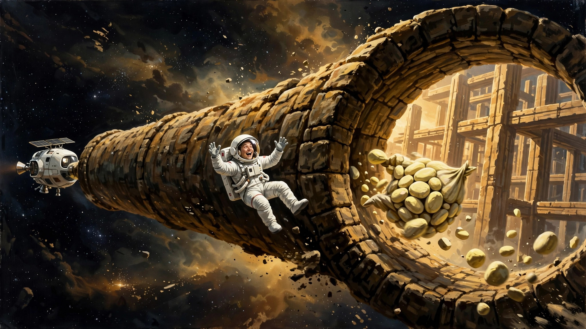
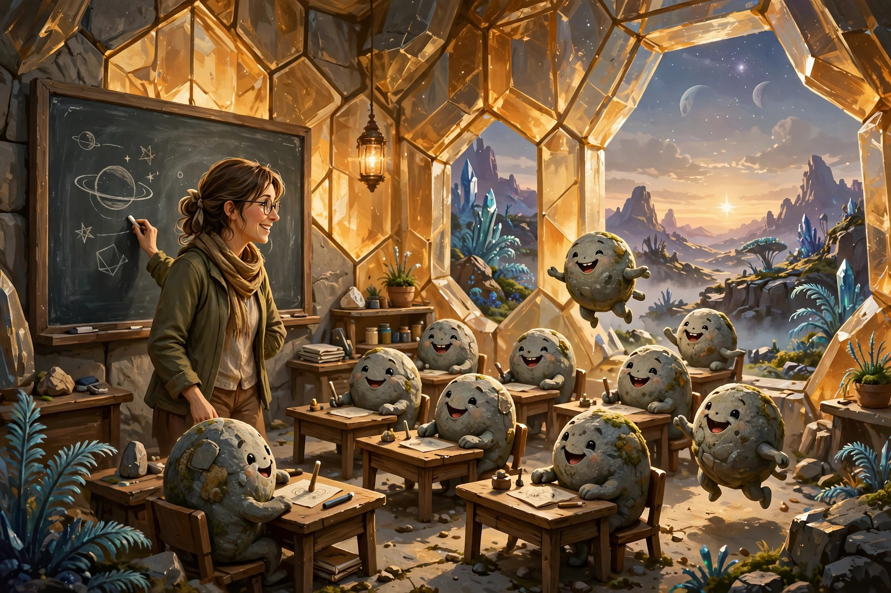

不想做英雄的英雄
欢迎点击上方名片关注我，您的支持是我持续原创的最大动力。
我是学文科的，但从小就是个科幻迷（我不知道这在文科生中算不算典型）。爱看各类科幻影视。喜欢的科幻电影从早期的《E.T》、《第三类接触》、《超时空接触》等，到近些年的《星际穿越》、《火星救援》等。剧集方面也有令我欲罢不能的佳作，如《苍穹浩瀚》（The Expanse）（已完结）和《为全人类》（For All Mankind)（最新第5季已开播）。近几年科幻影视圈有些沉寂，除了今年Apple TV的一部《同乐者》还有点新意外，基本没有什么能留下深刻印象的。最近刚上院线的科幻大片《挽救计划》（Project Hail Mary）无疑是个巨大的惊喜，在我个人心中可以排到科幻影史前三（前两名是《超时空接触》和《星际穿越》）。
下面就来聊聊这部最新的科幻佳作（以下剧透警告）。
影片从一个宇宙飞船的船舱里开始。从观众的角度这很容易看出来，但男主Grace就不一样了。他像是刚从一场深度昏迷中苏醒，胡子拉喳，满眼迷离，显然不知道自己在哪。这时一个灵活的机械臂过来对准Grace一通扫描，一边念念有词，问Grace：2加2等于几（应该是飞船的AI）。还没完全清醒的Grace根本不理会AI，从一个貌似手术台的床上跌跌撞撞爬起来，开始环顾四周，试图搞清状况。过了许久，他才意识到自己在一艘宇宙飞船里，飞船里除了自己以外的两名船员都已死亡。另两名船员的尸体已成木乃伊，说明已死去很久。
（从这里开始，Grace的记忆一点点恢复。所以后面的情节会穿插一些他上船前的碎片记忆。这里为了叙述方便，就按时间顺序来讲述了。）
这一切开始于人类即将遭遇的一场末世大灾难（以下是一个文科生尽最大努力用大白话复述的大致故事背景，如有不严谨之处敬请谅解）。人类科学家发现了一个古怪的天文现象：从太阳射出一条细线，这条细线一直延伸至金星。这条线被命名为佩特洛娃线（估计是以发现它的科学家命名）。经过仔细观察分析，科学家们发现这条线居然是由一些生命体组成的。这些生命体的性质很让人费解，它们可以耐受太阳表面几千度的高温而存活。它们之所以以细线形式从太阳出发去往金星是因为金星上有它们繁殖需要的大量二氧化碳。就这样这些生命体在太阳上越繁殖越多，使太阳越来越暗淡（正因为此，这些生命体被命名为“噬星体”）。照此发展下去的后果就是，地球温度会逐步下降，进入冰河时代，直至万物灭绝。至于作为万物之灵的人类，根本等不了那么久。仅仅只需几十年时间，随着温度下降粮食减产，全球人口就会损失几十亿。距离全部灭绝也就百多年时间吧。
在推演人类悲剧命运的过程中起到关键作用的正是我们的男主Grace。他原来是名科学家，多年前就发表过关于太阳暗淡现象的论文。后来不知遭遇什么挫折打击，Grace彻底放弃科学事业，来到一家小学担任一名默默无闻的教师。在眼前的空难被科学界发现后，他之前发表的论文引起了人们的注意。于是科学界委派一名女科学家斯特拉特作为代表与Grace联络。当斯特拉特找到Grace表明来意后，Grace本来兴趣不大。后来斯特挟特耐心解释了科学界关于太阳持续暗淡给人类所带来后果的共识，Grace才感觉责任重大。他同意对噬星体进行研究。在科学界的鼎力支持下，他的研究很快取得突破，发现了噬星体的繁殖方式和让太阳不断暗淡的储能模式。
于是，基于噬星体研究的进展，科学界立即启动了一项挽救太阳和人类家园地球的计划，名称叫Project Hail Mary（这个计划名的大致含义为“孤注一掷” ，源自橄榄球运动，具体网上可以查到，这里不赘述。）计划的主要内容是利用储能效率极高的噬星体为燃料，用一艘宇宙飞船以接近光速的速度送一个三人团队（一名船长、一名船员及一名科学家）去往鲸鱼座T星。之所以去那个星系，是因为科学家发现那是他们观测到的唯一不受噬星体影响的恒星。为了挽救太阳，就必须要弄清楚那个恒星不受噬星体影响的原因，从而找到解决方案。但这个计划有着非常残酷的另一面，即这是一次单程旅行。换言之，由于目的地太遥远，没有足够返程的燃料，送去的三个人只能在研究完成后发回研究结果，而他们自己只能永远留在茫茫太空了。
船长和船员人选都定下来了，这两位宇航员都是抱着为人类献身的勇气加入计划的。至于科学家人选，本来没有确定，但随着Grace对噬星体研究的突破性进展，大家自然就把目光投向了Grace。没有谁比他更了解噬星体，他去的话计划成功的几率无疑是最大的。但没想到Grace从一开始就坚决拒绝，不管怎么劝都不松口，要求计划指挥部另请高明。
看到这里有的观众可能要摇头，这人怎么回事，好歹也是受过很好教育的科学家，没有一点大局观和牺牲精神。我却认为完全可以理解，因为这才符合人性。这里我忍不住想吐槽下某些主旋律科幻片里的“人均英雄”现象。此类悲壮场面的确能赚一些观众的眼泪。但这部电影这样处理我觉得更真实（原著是否这样设定我不知道），因而值得赞赏。毕竟大无畏的英雄总是人群中的极少数，绝大部分人都是怕死的。怕死是人性，不能因为宏大叙事而故意忽略人性的脆弱面，那样的话，人物就变成了NPC、纸片人。
吐槽完回到正题。接下来，Grace和以斯特拉特为代表的计划指挥部进行了短暂的拉锯战。前者死活不肯上船，后者死磨硬泡劝前者上船。终究胳膊拧不过大腿，最后Grace是被五花大绑送上船的。这一段初看有点好笑，回味却让人心酸。被逼着当英雄不是什么好事，但终归还是成了英雄。多少有点黑色幽默的意味。
接着讲Grace苏醒后的事情。当他陆续回忆起上船前的情形后，他意识到自己此刻成了全人类的最后希望。虽然希望渺茫，但既然来都来了，他也不甘心就此等死。于是他行动起来，继续执行计划。第一步要确定是否已经到达预定目的地。一顿操作后他发现飞船果然已经到达鲸鱼座T星。但他同时也发现一个奇怪的现象。这个星系的佩特洛娃线有一段中断了，似乎被什么东西挡住了。 他驾驶飞船到附近观察，发现一个超级巨大的结构。这个结构由各种长条状物体组成，第一眼看上去有点像脚手架。材质上看类似石头。从这个结构的规则性来判断，这应该不是天然物体。Grace感觉到一点恐怖，下意识地想逃离。可当他启动飞船引擎，更诡异的事发生了，飞船飞出去没多久，就立即回到了原位。他连试了几次，每次飞船都能神奇复位，你说气不气人。这是被人当日本人耍呢！
就这样僵持了一会，事情有了新的进展。飞船上的AI突然报警有东西正在朝飞船接近。Grace再次陷入恐慌，这是被锁定开火了吗？他试图让飞船启动防御装置，却发现飞船压根没这设计（能把你送这么远的地方来已经费老鼻子劲儿了，想什么呢）。只有眼睁睁地看着那个东西慢速撞上飞船。结果……啥事没有，东西撞到飞船弹出去飞走了。这种速度撞上，可能还是个很轻的东西，所以没啥威胁。难道对方是发来什么东西想让我接收？Grace这么想着，第二个物体又飞过来了。这次他不怕了，穿上舱外服，系上绳子主动迎上去，接到了物体。那是个黑色的瓶状物，上面有个盖子可以拧开，和一般的水杯有点像。由于不清楚这东西对人体有没有害，他先用仪器对这个物体做了一番分析。确定无害后打开盖子，从里面拿出一个东西。有点像3D打印的某种模型。端详了一会，他发现那是一个宇航员的形象，那不就是他自己吗？手艺是有点粗糙，但基本能看懂。这么说来，对方的确没恶意，只是告诉他：我看到你了，你长这样。这显然是想进一步交流的意思。
Grace心想，那要不我去会会它？刚想出舱用太空行走的方式去那个巨型结构一探究竟，却见从那个结构里慢慢延伸过来一个圆形管道状的东西，一直延伸到和他的飞船舱门对接。Grace马上明白，这是对方给自己搭了座“桥”啊，邀请他过去做客的意思。Grace现在更加笃信对方是善意的，于是他马上启程过去。管道里面一片漆黑。但他能够脚踩地面而不用飘着，看来管道里面预设了适合人类行走的重力。他一点点往前摸索，不久到达尽头。那里有一个类似门的东西，材质像塑料。Grace打开灯仔细察看里面，突然发现里面有一堆淡黄色的石头状东西在动，他吓了一跳，同时大叫起来。那些东西貌似是活的，而且也似乎被吓坏了，张牙舞爪地剧烈动起来。
Grace平静下来意识到这可能是外星人，那个奇怪的大型结构可能就是他（她？）驾驶的飞船。想到这里，他的害怕就减少一大半了，开始仔细观察眼前的外星人。这个外星人的外貌很难形容，看不出头和脸（更别提五官了），身体好像是由石头块组成。移动（走路）的时候像是一麻袋石头在那里滚来滚去的样子。 这和地球人传统想象中的大头大眼睛外星人的形象相去甚远。任何交流先从自我介绍开始，不同文明间的交流也不例外。Grace先作了自我介绍，但对方似乎不明白他的意思。Grace为了方便，干脆给对方起了个名字叫Rocky（小石头）（与漫威里的“洛基”谐音，后面还玩过谐音梗）。

顺便提一个小细节。Grace在与Rocky初次交流时致敬了经典电影《第三类接触》，哼了其中的主题曲（五个音符那个）。据说音乐和数学是宇宙通用语言，《第三类接触》正是通过音乐在文明之间建立了联系。这个梗估计要上了一定年纪，或者是硬核科幻迷才能get到吧。
就这样，两个不同文明的代表通过简单的动作手势认识了彼此，但要想进一步交流光靠比划还是挺费劲。不过双方在认识彼此后的共同喜悦还是溢于言表的。在茫茫宇宙中，两个来自不同文明的孤独灵魂偶遇，这是多么难得的事。在手势交流的过程中也出了不少趣事。比如，Grace告诉Rocky，大拇指朝上是很棒的意思(thumbs up)。但Rocky的身体结构没法做这个手势，他只能做类似大拇指朝下的动作。还有，也许是发声器官限制，Rocky无法准确模仿thumbs up这两个单词，发出的音听上去像另一个不雅的词儿。
别看Rocky在语言交流方面显得笨拙了点，但他来自的文明科技却远比人类先进，从他能凭空在太空中建一座“桥”这种本事就可见一斑了。接下来Rocky又露了一手，让Grace大开眼界。Rocky示意Grace可以打开笨重的宇航服面罩自由呼吸。Grace吓得连连摆手谢绝。常识告诉他人类在太空中这么做无异于寻死，更何况他还是科学家。Rocky看他这么害怕，就马上又炮制了一个3D模型给他看。聪明的Grace马上看出来这是氧原子的结构模型。Rocky应该是在告诉他， 他可以放心拿掉面罩，有氧气可供呼吸。但Grace还是不敢拿生命开玩笑，万一对方是恶作剧怎么办。他转身准备离去，走了几步又回过头来，想了想还是慢慢取下面罩。当他呼吸到新鲜空气时，不禁大笑了起来。Rocky果然没骗他。回想第一次见面的整个过程，Rocky似乎显得很好客，不但给他搭了桥，还体贴地为他创造了让人类舒适的环境，如重力和氧气。
接下来，为了提高交流效率，Grace用电脑创造了一个单词对应一个单词的字典。只需几百个单词，他们就可以用蹦单词的办法进行简单而顺畅的交流了。通过这些交流，Grace了解到，Rocky及他的飞船来自波江座一个星系。他们的使命和Grace他们一样，也是来鲸鱼座T星寻找对付噬星体的解决方案。更巧的是，他们飞船上发生的事也和挽救计划飞船一样，飞船上最后只剩下一个人，其他船员都死了。不同的是，Rocky比Grace更不幸，他已经一个人在这里呆了47年，这是多么可怕的孤独！
本来感觉希望渺茫的Grace因为这次奇遇重燃希望。他开始在Rocky的帮助下对鲸鱼座T星对噬星体免疫的原因开展研究。幸运的是，研究不久就产生突破。Grace通过对T星上的另一种生命体采样分析发现，这种生命体竟然是噬星体的克星！它可以有效阻止噬星体繁殖，保护恒星不被噬星体吞噬。有了这个重大发现，地球以及Rocky的母星都会得救。接下来他俩的任务是要尽量多地采集这种生命体（Grace将其命名为“T星抗体”），然后将这些抗体带回各自的母星，挽救计划就会成功。但说说容易做起来难，接下来就是个棘手的问题，怎么收集这些T星抗体。
T星抗体所在的行星是个气体行星，气候恶劣（有点像太阳系的木星）。要深入到这个行星里面采集抗体谈何容易。但好不容易到最后一步了，再难也得往前推进啊。Grace和Rocky再度联手攻关（此去省去技术细节1W字），最终设计了一个可行的方案。实施方案的过程虽然惊心动魄，但幸运的是他们最后还是成功了。
然后，Grace和Rocky就按原计划分别驾驶载有T星抗体的飞船“各回各家，各找各妈”了。不过，好事多磨，在返程途中，Grace无意发现一个重大问题。T星抗体会腐蚀石头。这意味着，以石头为主要材质的Rocky的飞船可能会发生泄露。Rocky别说返回自己的母星了，可能自己在半路上就有生命危险！而两人分别踏上返程后，相隔太远，Grace无法及时将这一危急情况告知Rocky。
现在摆在Grace面前的有两个选择：1）继续返回地球，完成挽救计划。2）追上Rocky，告诉他泄露一事，以助其摆脱危险。选择第一个，意味着要眼睁睁看着Rocky死。Rocky死了，他的母星自然也就难逃厄运。这个结局太惨了，Grace的良心无论如何都接受不了。选择第二个吧，Grace的燃料肯定不够返回地球。思来想去，Grace决定选第二个，先去救好基友。但地球还等着他拯救呢，挽救计划不能半途而废。好在原计划就没打算让他回地球，随船准备好了几个送样本的小飞行器。这时正好派上用场。于是，Grace将T星抗体装进几个小飞行器，设定航线让它们载着抗体回地球，也算是不辱使命了。（这里有个彩蛋，返程的小飞行器分别以披头四（Beatles）乐队的成员命名（包括Lennon、Ringo等）
那么接下来Grace面临的命运又是九死一生了。本来他可以顺利带T星抗体返回地球，现在只有抗体能回去。至于他本人，或许能追上Rocky，救下Rocky一命。但他自己的命运如何就很难说了。毕竟追上Rocky后，他就真的无家可归了。这结局想想都令人不寒而栗。
影片到此处，Grace的生死观可以说发生了天翻地覆的变化。上船前，他非常怕死，以至于被人打晕，再五花大绑地押上船。而现在，同样面临万分孤寂地死在茫茫宇宙里这个可能的糟糕结局，他却为了救朋友和他的母星，义无反顾地踏上九死一生的旅途。其实认真看到这里的观众，大多会理解这种转变。上船前，他在地球无牵无挂，但地球是他唯一的归宿。让他永远离开这唯一的归宿，孤独地死在太空，他当然无法接受。而现在，虽然他不幸被迫上船，但有幸认识了Rocky，来自另一个文明的有趣灵魂。在短暂的相处中，两人为了拯救各自的母星，并肩战斗，克服万难，终于获得成功。这种独特经历中间结下的情谊，超越了一般的兄弟情、战友情甚至亲情，说它是跨越文明、跨越星系的宇宙级友谊也毫不夸张！人同此心，如果换作是我，我大概率也会做出和Grace同样的选择。这不是什么伟大，只是真情而已。怕死是人的本能，但人这辈子总有那么一刻发现比生命更宝贵的东西，愿意为之赴死也是真情流露，不必上升到道德高度。
接下来影片没有讲Grace怎么追上Rocky的细节，而是直接跳到了结局。好在结局皆大欢喜，Grace随同Rocky到了他在波江座的母星。在那里Grace因为他和Rocky的深厚友谊和大无畏义举而受到爱戴。Rocky的星球专门为Grace建造了类似地球海洋的生态环境，尽可能让Grace能够住得舒适（不会想家）。还给Grace找了份工作（也和地球一样）——小学老师。影片结尾，Grace带着一帮欢快的小石头上课，简直复刻了他离开地球前的场面，无比欢乐！

另一头的地球家园现在情况怎样呢？镜头来到地球上的一片冰原（地球现在已经是一个冰雪覆盖的垂死星球），一艘破冰船正在厚厚的冰层里艰难地行驶。科学家斯特拉特收到消息，Grace发回的载有T星抗体的飞行器到达地球了。这标志着挽救计划成功了，地球终于得救了！
虽然合家欢的结局有点俗套，但对于跟随Grace和Rocky经历这趟惊心动魄旅程的观众而言，这种结局无疑能带来极大的满足和喜悦。
整部影片虽然故事简单，角色不多，也没有其他科幻大片那么多的宏大场面和炫酷特效，但其过人之处也是明显的，那就是人物刻画。很多优秀的科幻作品在这方面都有短板，人物单薄几乎是通病（这里就不具体举例了）。这也是为什么科幻作品在文学这个大类中一直处于比较边缘地位的重要原因之一。可喜的是，挽救计划这部电影（原著我还没看，这里仅讨论电影）补齐了这方面的短板，让主要人物有血有肉、有情有义，大大地提升了它的可观赏性和艺术价值。期待未来有更多此类的优秀科幻作品出现。